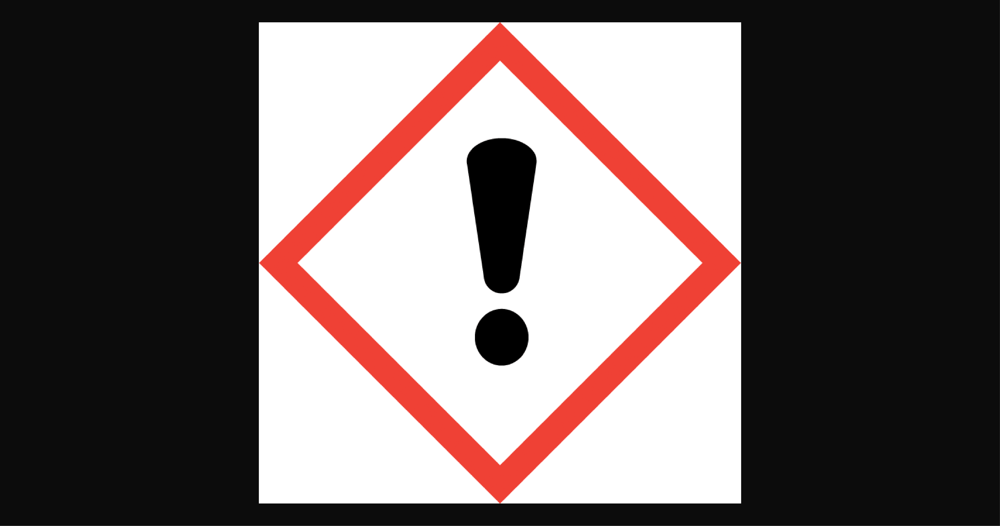

Praca w laboratorium jest naprawdę niebezpieczna. Aby ograniczyć ryzyko, używa się wielu sposobów, żeby w razie wypadku szkody były jak najmniejsze i dotyczyły jak najmniejszej liczby osób.
Oczywiste jest, że nie wolno jeść odczynników, wąchać ich bezpośrednio ani biegać w laboratorium, ale są też mniej oczywiste zasady. Na przykład podczas podgrzewania substancji w probówce nie kieruj jej w stronę ludzi ani wrażliwych przedmiotów.
PPE jest bardzo przydatne — może znacząco ograniczyć skutki wypadków. Wspomniałem o różnych rękawiczkach: nie istnieją rękawiczki idealne. Mamy lateksowe, nitrylowe, winylowe i wiele innych. Co to zmienia? Nitryl jest powszechnie uznawany za bardzo dobry, ale przy pracy z HNO3 może dojść do niebezpiecznych reakcji po kontakcie z rękawiczką. Zawsze sprawdzaj zgodność materiału rękawic z substancją w karcie SDS. Gaśnice podobnie — nie wszystko można gasić każdą gaśnicą. Na przykład gaśnicą CO2 nie ugasisz magnezu. Informacje, czym gasić dany pożar, znajdziesz w karcie charakterystyki (SDS).
Piktogramy to oznaczenia zagrożeń związanych z daną substancją. Wyróżniamy m.in. 9 piktogramów:
| Nazwa | Symbol |
| Substancja wybuchowa | |
| Substancja utleniająca | |
| Substancja toksyczna | |
| Substancja niebezpieczna dla środowiska | |
| Substancja łatwopalna | |
| Substancja mutagenna | |
| Substancja żrąca/korodująca metale | |
| Substancja drażniąca/uczulająca |  |
| Gaz pod ciśnieniem |
Co oznacza NFPA 704? Jest to oznakowanie wyglądające tak:
Kolory oznaczają rodzaje zagrożeń:
| Czerwony | Palność |
| Niebieski | Zdrowie |
| Żółty | Reaktywność |
| Biały | Specjalne zagrożenia (np. kwas, zasada, promieniotwórczość itp.). |
Numery/symbole oznaczają poziom zagrożenia:
| Symbol | Znaczenie |
| 0 | Niepalne |
| 1 | Palne w temperaturze powyżej 93°C |
| 2 | Palne w temperaturze poniżej 93°C, ale powyżej 38°C |
| 3 | Palne w temperaturze poniżej 38°C do 27°C |
| 4 | Tworzy mieszaninę wybuchową w powietrzu (natychmiastowo lub po rozpyleniu) |
| 0 | Brak zagrożenia |
| 1 | Może powodować tymczasowe dolegliwości |
| 2 | Może powodować przejściowe uszkodzenia zdrowia z ryzykiem powikłań |
| 3 | Krótki kontakt może powodować poważne zatrucia |
| 4 | Bardzo krótki kontakt może powodować śmierć lub poważne zatrucie |
| 0 | Stabilne w normalnych warunkach (nie reaguje z wodą ani nie ulega działaniu otwartego ognia) |
| 1 | Stabilne w normalnych warunkach, ale może stać się niestabilne pod ciśnieniem lub w wyższej temperaturze |
| 2 | Ulega niebezpiecznym przemianom chemicznym w podwyższonych temperaturach i ciśnieniu; może reagować z wodą z wytworzeniem produktów wybuchowych |
| 3 | Zdolne do detonacji lub wybuchowego rozkładu pod wpływem silnego bodźca |
| 4 | Zdolne do detonacji lub energicznego rozkładu w normalnych warunkach temperatury i ciśnienia |
| OX/OXY | Utleniacz |
| ACID | Kwas |
| ALK | Zasada |
| COR | Żrące |
| W | Niebezpieczna reakcja z wodą |
| SA | Gaz duszący |
| BIO | Zagrożenie biologiczne |
| POI | Trucizna |
| CRY/CRYO/CRYL | Kriogeniczne (bardzo niskie temperatury) |
| RAD | Promieniotwórcze |
Na koniec warto wspomnieć, że NFPA 704 jest używany głównie w USA i nie jest wymagany w Polsce, jednak warto znać to oznakowanie.